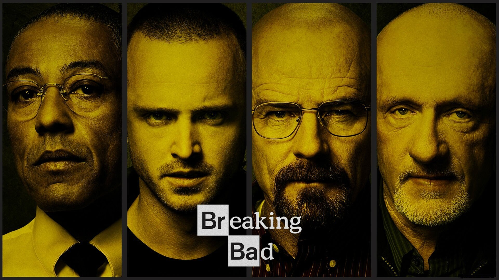
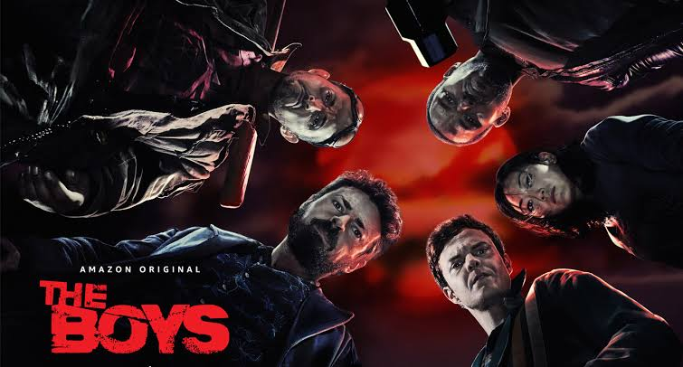
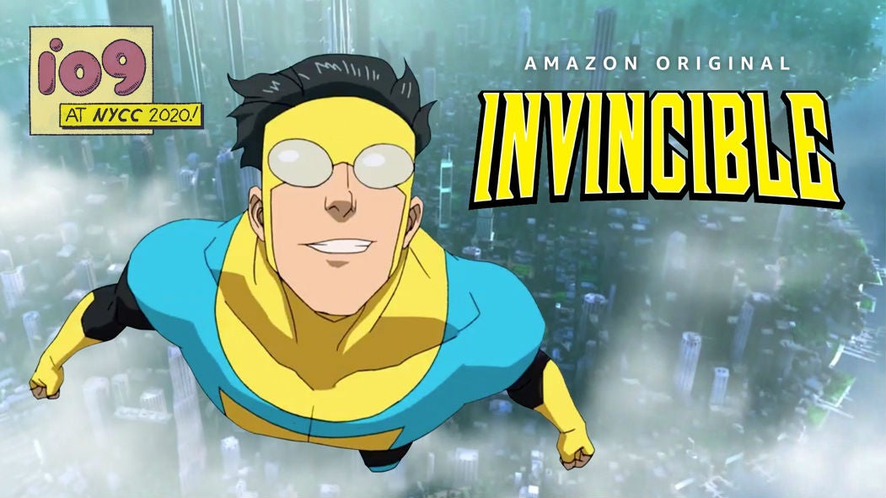
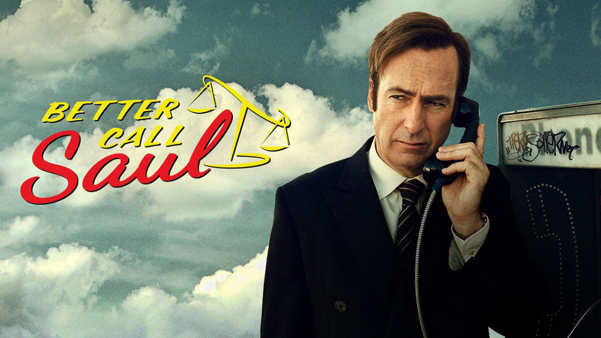

Misterio - Super Héroes
Lanterns
2026
La que estoy viendo ahora mismo.
Estas son las series que más me gustan y la que estoy viendo ahora mismo.
Viendo ahora
Misterio - Super Héroes
2026
La que estoy viendo ahora mismo.
Pulsa una portada para ver su tráiler.

★ FavoritaThriller
2008
Es probablemente la serie más perfecta que han hecho jamás.

Súperhéroes
2019
Vigilantes con poderes que no respetan la moral. Lo que empieza como una crítica de superheroes acaba siendo una crítica de la sociedad.

Súperhéroes
2021
Brutal, merece la pena verla sin saber nada antes.

Thriller
2015
Precuela de Breaking Bad. Llega más lejos de lo que esperabas y funciona muy bien.
Si tengo que elegir una sola: Breaking Bad. Es probablemente la serie más perfecta que han hecho jamás.